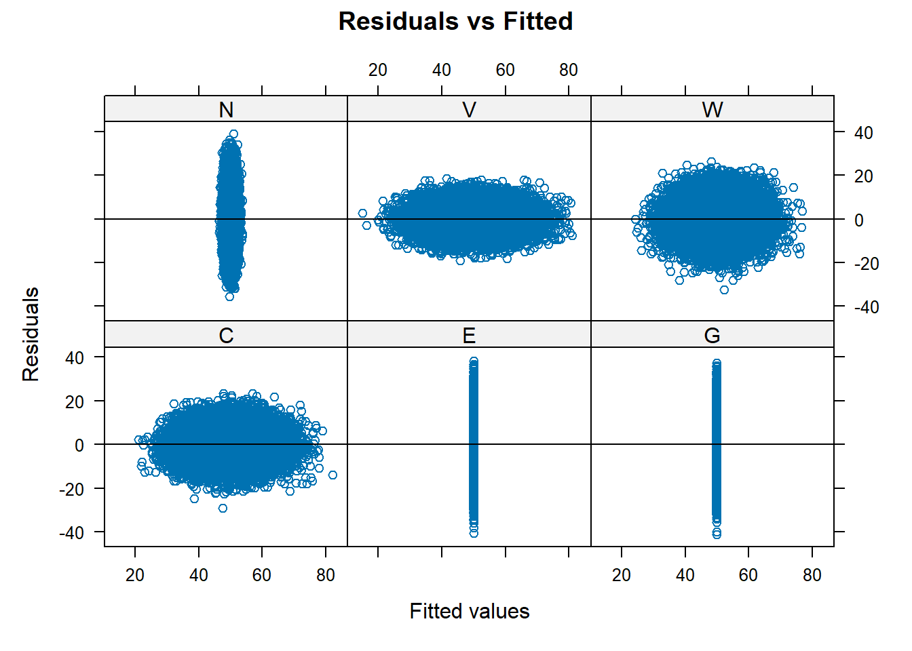

3 3.混合事例：条件付きガウシアン・ベイジアンネットワーク
3.1 3.1事例紹介：健康管理にかかるコスト
Age:A; 離散型
Pre-existing conditions:C; 離散型：既往歴
Outpatient expenditure:O; 連続型：通院にかかる費用
Inpatient expenditure:I;連続型：入院にかかる支出
Any hospital stay:H;離散型：入院該当の有無
Days of hospital stay:D; 連続型：入院日数
Taxes:T;連続型：医療費にかかる税金

#Aの条件付き確率表作成
A.lv <- c("young", "adult", "old")
A.prob <- array(c(0.35, 0.45, 0.20), dim = 3, dimnames = list(A = A.lv))
A.prob## A
## young adult old
## 0.35 0.45 0.20年齢に応じて既往症のレベルが異なるようにCを条件付ける
C.lv <- c("none", "mild", "severe")
C.prob <- array(c(0.88, 0.10, 0.02, 0.75, 0.20, 0.05, 0.42, 0.53, 0.05),
dim = c(3, 3), dimnames = list(C = C.lv, A = A.lv))
C.prob## A
## C young adult old
## none 0.88 0.75 0.42
## mild 0.10 0.20 0.53
## severe 0.02 0.05 0.05H.lv <- c("none", "any")
H.prob <- array(c(0.90, 0.10, 0.75, 0.25, 0.60, 0.40),
dim = c(2, 3), dimnames = list(H = H.lv, A = A.lv))
H.prob## A
## H young adult old
## none 0.9 0.75 0.6
## any 0.1 0.25 0.4D.coef <- list(coef = array(c(0, 0, 0, 1, 4, 7), dim = c(1, 6),
dimnames = list("(Intercept)", NULL)),
sd = c(0, 0, 0, 0.5, 1, 1.5))
D.coef## $coef
## [,1] [,2] [,3] [,4] [,5] [,6]
## (Intercept) 0 0 0 1 4 7
##
## $sd
## [1] 0.0 0.0 0.0 0.5 1.0 1.5DはH(入院の有無)×A(young mild old)に対応している
Hがnoneなら0
離散型変数→連続型変数の場合
- 親ノードの離散型変数の値に応じて複数の線形回帰モデルをセットとして表現する
連続型変数が複数の離散型変数を親ノードとして持つ場合
- 親ノードの値に対応した回帰モデルを複数含む形で構成される
連続型変数の親ノードが連続型変数である場合
- 親ノードの連続型変数が子ノードの下位モデルに混在する形
I.coef <- list(coef = array(c(1, 3, 1, 5.5, 1, 8) * 100 ,
dim = c(2, 3), dimnames = list(c("(Intercept)", "D"), NULL)) ,
sd = c(30, 50, 100))
I.coef## $coef
## [,1] [,2] [,3]
## (Intercept) 100 100 100
## D 300 550 800
##
## $sd
## [1] 30 50 100O.coef <- list(coef = array(c(60, 180, 360), dim = c(1, 3),
dimnames = list("(Intercept)", NULL)),
sd = c(10, 20, 40))
T.coef <- list(coef = c("(Intercept)" = 120, I = 1.02, O = 1.05),
sd = 10)\[ T= 120+1.02I+1.05O+\varepsilon_T\sim N(0,10^2) \]
上記内容でBNを定義したのでbn.fitオブジェクトを作成する
dists <- list(A = A.prob, C= C.prob, H = H.prob, D= D.coef,
I = I.coef, O = O.coef, "T" = T.coef)
healthcare <- custom.fit(dag, dists)
healthcare$I##
## Parameters of node I (conditional Gaussian distribution)
##
## Conditional density: I | C + D
## Coefficients:
## 0 1 2
## (Intercept) 100 100 100
## D 300 550 800
## Standard deviation of the residuals:
## 0 1 2
## 30 50 100
## Discrete parents' configurations:
## C
## 0 none
## 1 mild
## 2 severe上記で構築したものが、条件付きガウシアン・ベイジアンネットワーク（CGBN）である。
離散型ノードは多項分布に従う
連続型ノード（親ノードに離散型を含まない）は正規分布に従う
1つ以上の離散型ノードの親を持つ連続型ノードは、離散型変数である親の状態を組み合わせた中における1つの要素の混合正規分布に従う
混合状態における各要素は独立したパラメータを持つ
連続型ノードは連続型ノード、離散型ノードいずれも親にできる
離散型ノードは離散型ノードしか親にできない
3.2 3.3パラメータの推定：混合回帰
すでにDAGは既知であるとする
costs <- read.table("data/healthcare.txt", header = TRUE,
colClasses = c("factor", "factor", "numeric", "factor",
"numeric", "numeric", "numeric"))## A
## H adult old young
## any 0.2380435 0.4239401 0.1060383
## none 0.7619565 0.5760599 0.8939617#経験的頻度を用いて推定したもの→つまり実際の値から算出される確率
cpt.H <- prop.table(table(costs[, c("H", "A")]), margin = 2)
#これをfitの推定値と比較してみる
all.equal(cpt.H, coef(fitted$H))## [1] TRUE同じものが得られている